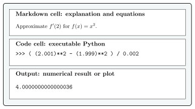
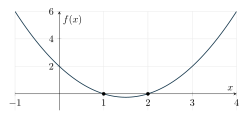
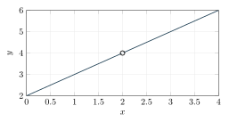
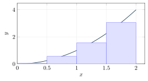
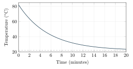

Introduction to Python and Jupyter
Purpose. This appendix assumes no programming experience. Its goal is to help you use Python to investigate, visualize, and verify calculus—not to replace mathematical reasoning. First formulate the mathematical problem, then write code, check the result, and explain what it means.
Learning goals. By the end, you should be able to open a Jupyter notebook; create and execute cells; distinguish Python objects and data types; use NumPy arrays; write functions; produce labeled plots; approximate limits, derivatives, integrals, and roots; work with a small dataset; recognize common errors; and share reproducible work.
What Are Python and Jupyter?
Python is a general-purpose programming language. In calculus, it helps us evaluate mathematical expressions, process arrays of values, make graphs, approximate derivatives and integrals, and analyze mathematical models. Python is free and open source.
Jupyter provides interactive notebooks combining
executable code, explanatory text, mathematical notation, and displayed
results. A notebook file ends in .ipynb. A notebook is not
the Python language itself: Python runs through a computational
kernel connected to the notebook.
JupyterLab is a browser-based workspace for
notebooks and other files. Jupyter Notebook is another
notebook interface. Both can run the examples in this appendix. You can
also use Python in a regular .py script or an editor such
as VS Code; the mathematics remains the same.

Figure B.1. Conceptual notebook layout; not a screenshot. The example is illustrative of input and output cells.
Installing Python and Opening Jupyter
A beginner-friendly route is to install a Python distribution that
includes JupyterLab and scientific packages, such as Anaconda. Another
route is to install Python from https://www.python.org/ and add packages using
pip. Choose one route and follow the current installation
instructions for your operating system.
Option 1: Anaconda. Download a suitable installer from https://www.anaconda.com/download. Follow the installer instructions and launch JupyterLab through the distribution’s interface, or through its terminal tools. Exact menu names vary by version.
Option 2: Python and pip. After installing Python,
open a terminal and run the following commands. Depending on your
system, python3 may replace python.
python -m pip install jupyterlab numpy matplotlib scipy
python -m jupyter labThese commands belong in a terminal, not a Python notebook cell. The second command launches JupyterLab, typically opening a browser tab. For coursework, a virtual environment is recommended to keep project dependencies separate.
First session: create a new notebook with a Python
kernel; rename it appendix_b_practice.ipynb; type
2 + 3 into a code cell; run the cell using Shift+Enter. A
result of 5 should appear. Save the notebook using the save control or
keyboard shortcut. If the notebook shows a message that no kernel is
available, select or install a Python kernel. Restarting the kernel
clears objects stored in memory, even if the notebook still displays
earlier outputs.
Cells, Execution Order, and Markdown
A notebook contains code cells (executed by Python) and Markdown cells (used for prose, headings, and mathematical notation). Use Markdown to explain the model, show derivations, and interpret numerical output.
In a Markdown cell, type
# My first calculus investigationto create a heading.To display an equation, enter
$$f(x)=x^2+1$$in a Markdown cell and render it.In a code cell, type the example below and run it with Shift+Enter.
<!-- -->Download code x = 2 f = x**2 + 1 print(f)
The output is 5. Notice that ** means exponentiation in
Python, while ^ does not mean exponentiation.
Execution order matters. If you execute a cell using
x before the cell assigning x = 2, Python may
report a NameError. When sharing a notebook, restart the
kernel and run all cells from top to bottom. This is an important
reproducibility check.
Arithmetic, Variables, and Mathematical Notation
Python supports addition +, subtraction -,
multiplication *, division /, exponentiation
**, and parentheses. Use a descriptive name for a quantity
whenever possible.
radius = 3
area = 3.141592653589793 * radius**2
print(area)
print(7 / 2) # 3.5: ordinary division
print(7 // 2) # 3: floor division
print(7 % 2) # 1: remainderThe symbol = assigns a value; == tests
equality. Comments begin with # and are not executed. Names
are case-sensitive: Time and time refer to
different objects.
If \(A=\pi r^2\), Python requires
explicit multiplication: math.pi * r**2, not
pi r^2. Writing the expression correctly is part of
translating mathematics into code.
Numbers, Strings, Booleans, and Missing Values
int represents integers; float represents
approximate real numbers; str represents text; and
bool represents True or False.
The value None is often used for a missing or unspecified
value, but it is not the same as the floating-point nan
used in numerical arrays.
count = 5
step = 0.01
label = "time (seconds)"
valid = step > 0
print(type(count), type(step), type(label), valid)Computers store most real numbers approximately. For example,
0.1 + 0.2 == 0.3 may evaluate to False because
of floating-point representation. To compare computed numbers, use a
tolerance rather than exact equality.
import math
print(math.isclose(0.1 + 0.2, 0.3))Importing Mathematical Libraries
The built-in math module provides constants and
functions for individual numbers. NumPy supports numerical arrays;
Matplotlib makes graphs; SciPy provides numerical algorithms such as
integration and root-finding.
import math
import numpy as np
import matplotlib.pyplot as plt
from scipy import integrate, optimize
print(math.pi)
print(math.sqrt(49))
print(np.sin(np.pi / 2))The short names np and plt are conventions,
not new languages. math.sin operates on one ordinary
number; np.sin can operate on an entire NumPy array.
Trigonometric functions use radians. To convert degrees to radians, use
np.deg2rad(30). For example,
np.sin(np.deg2rad(30)) is approximately \(0.5\).
Lists and NumPy Arrays
A Python list stores a sequence of items. A NumPy array supports efficient elementwise arithmetic, making it particularly useful for evaluating functions at many inputs.
values = [1, 2, 3]
print(values * 2) # repeats the list
x = np.array([1, 2, 3])
print(x * 2) # array([2, 4, 6])
print(x**2 + 1) # array([2, 5, 10])The distinction is essential: Python lists and NumPy arrays behave differently. In the calculus laboratories, use arrays when you want mathematical operations applied element by element.
x = np.linspace(-2, 2, 9)
y = x**2
print(x)
print(y)np.linspace(a,b,n) creates \(n\) equally spaced points including the
endpoints. Here, the step size is \(0.5\). By contrast,
np.arange(0,1,0.2) uses a step size and may be affected by
floating-point rounding.
Writing Mathematical Functions
A function collects a mathematical rule into a reusable block. Python
uses the keyword def; the function body is indented. The
return statement specifies the output.
def f(x):
return x**2 - 3*x + 2
print(f(0))
print(f(2))
print(f(np.array([0, 1, 2, 3])))For this polynomial, \(f(0)=2\) and
\(f(2)=0\). The same function also
accepts a NumPy array because its operations are elementwise. A function
that uses math.exp may not accept an array; use
np.exp for array-based evaluations.
Define \(g(t)=5e^{-0.4t}+2\) using
np.exp. Evaluate \(g(0)\),
\(g(5)\), and \(g(10)\). Explain why the outputs approach 2
as \(t\) increases.
Plotting Mathematical Functions
A good graph includes an informative title, labeled axes, units when relevant, and a legend when more than one curve is shown. The following code plots \(f(x)=x^2-3x+2\).
x = np.linspace(-1, 4, 400)
y = f(x)
plt.figure(figsize=(7, 4.5))
plt.plot(x, y, label="f(x) = x^2 - 3x + 2")
plt.axhline(0, color="gray", linewidth=0.8)
plt.xlabel("x")
plt.ylabel("f(x)")
plt.title("A quadratic function")
plt.grid(alpha=0.25)
plt.legend()
plt.show()
Figure B.2. A quadratic with zeros at \(x=1\) and \(x=2\). The plot is a visual aid, not a substitute for solving the equation.
Graphing two functions on the same axes
x = np.linspace(0, 3, 300)
plt.plot(x, np.exp(-x), label="exp(-x)")
plt.plot(x, 1 / (1 + x), label="1/(1+x)")
plt.xlabel("x")
plt.ylabel("Function value")
plt.title("Two decreasing functions")
plt.legend()
plt.grid(alpha=0.25)
plt.show()A line plot across a discontinuity can be misleading: connecting points on opposite sides of a vertical asymptote may draw a false line. Plot the two sides separately or mask invalid values.
Reading and Interpreting Numerical Output
Printed values may contain many digits, but not all are scientifically meaningful. A model’s assumptions, units, and measurement precision should guide reporting.
rate = 0.34789215
print(f"Estimated rate: {rate:.3f} per hour")
print(f"After 4 hours: {np.exp(-rate*4):.2%} remains")The f before the quotation mark creates an
f-string. The format :.3f prints three digits
after the decimal point, while :.2% prints a percentage to
two decimal places. Formatting changes the display, not the stored
number.
Numerical Limits: Evidence and Caution
Consider \(\lim_{x\to 2}(x^2-4)/(x-2)\). The original expression is undefined at \(x=2\), but it simplifies to \(x+2\) for \(x\ne2\), so the limit is 4.
def quotient(x):
return (x**2 - 4) / (x - 2)
for h in [0.1, 0.01, 0.001, 0.0001]:
print(f"h={h:.4g}, value={quotient(2+h):.8f}")The table suggests the limit is 4, but the algebra establishes it. Very small values of \(h\) can produce cancellation and rounding errors. Never conclude that a limit exists solely because a few numerical values appear stable.

Figure B.3. A removable discontinuity at \((2,4)\): the limit exists although the original expression is undefined there.
Numerical Differentiation
The derivative is defined by the limit \(f'(a)=\lim_{h\to0}[f(a+h)-f(a)]/h\). A centered difference often gives a more accurate approximation than a forward difference for smooth functions: \[f'(a)\approx \frac{f(a+h)-f(a-h)}{2h}.\]
def derivative_centered(fun, a, h=1e-4):
return (fun(a+h) - fun(a-h)) / (2*h)
def cubic(x):
return x**3 - 2*x
estimate = derivative_centered(cubic, 2)
exact = 3*2**2 - 2
print(estimate, exact, abs(estimate-exact))For \(f(x)=x^3-2x\), \(f'(2)=10\). The centered approximation should be close to 10. Choosing \(h\) too large creates truncation error; choosing it extremely small may magnify floating-point error. This is why a smaller step is not always better.
Tangent-line approximation
At \(a=2\), the tangent line is \(L(x)=f(2)+f'(2)(x-2)\). We can compare it to the function near the contact point.
a = 2
slope = derivative_centered(cubic, a)
x = np.linspace(1.4, 2.6, 250)
tangent = cubic(a) + slope*(x-a)
plt.plot(x, cubic(x), label="f(x)")
plt.plot(x, tangent, "--", label="Tangent line")
plt.scatter([a], [cubic(a)])
plt.xlabel("x")
plt.ylabel("y")
plt.legend()
plt.grid(alpha=0.25)
plt.show()Riemann Sums and Numerical Integration
A definite integral represents signed accumulation. For \(f(x)=x^2\) on \([0,2]\), the exact value is \(\int_0^2x^2\,dx=8/3\).
def midpoint_rule(fun, a, b, n):
width = (b-a)/n
midpoints = a + (np.arange(n)+0.5)*width
return width*np.sum(fun(midpoints))
for n in [4, 10, 50, 200]:
print(n, midpoint_rule(lambda x: x**2, 0, 2, n))
print("Exact:", 8/3)The midpoint rule estimates the integral using \(n\) rectangles. As \(n\) increases, the estimate generally improves for this smooth example. The approximation does not become an exact symbolic integral simply because it uses many rectangles.

Figure B.4. Four midpoint rectangles approximate the area under \(f(x)=x^2\) on \([0,2]\).
Adaptive numerical integration with SciPy
from scipy.integrate import quad
value, error_estimate = quad(lambda x: x**2, 0, 2)
print(value, error_estimate)quad returns an integral estimate and an estimated
absolute error. This is numerical evidence; the exact result \(8/3\) comes from the Fundamental Theorem of
Calculus. The error estimate is not a guarantee for every pathological
integrand.
Solving Equations Numerically
A root of \(g(x)\) is a number \(c\) satisfying \(g(c)=0\). For \(g(x)=\cos x-x\), a sign change between 0 and 1 ensures at least one root by continuity and the Intermediate Value Theorem.
def g(x):
return np.cos(x) - x
root = optimize.brentq(g, 0, 1)
print(f"Root: {root:.8f}")
print(f"Residual: {g(root):.2e}")The root is approximately \(0.73908513\). The residual measures how closely the numerical answer satisfies the equation. The method requires a suitable interval with opposite signs at its endpoints; a sign change is a useful sufficient condition, not a necessary condition for a root.
A simple bisection algorithm
def bisection(fun, left, right, tol=1e-8):
if fun(left)*fun(right) > 0:
raise ValueError("Endpoints must bracket a root")
while right-left > tol:
middle = (left+right)/2
if fun(left)*fun(middle) <= 0:
right = middle
else:
left = middle
return (left+right)/2
print(bisection(g, 0, 1))This basic educational implementation assumes a continuous function, a valid bracket, and finite evaluations. Production algorithms need additional safeguards and stopping criteria.
Working with Data and CSV Files
A dataset may contain measurements collected at different times. NumPy can load simple numeric CSV files; larger data-analysis projects often use pandas, but pandas is not required for the following example.
time = np.array([0, 2, 4, 6, 8], dtype=float)
temperature = np.array([82, 67, 56, 48, 42], dtype=float)
np.savetxt("cooling_data.csv",
np.column_stack([time, temperature]),
delimiter=",", header="time,temp", comments="")
data = np.loadtxt("cooling_data.csv", delimiter=",",
skiprows=1)
print(data)This creates a small example file in the notebook’s working directory and reads it back. A CSV is a plain-text table, not a notebook. Keep your input data separate from the analysis code.
An Exponential Modeling Example
Suppose temperature is modeled by Newton’s cooling law: \[T(t)=T_a+(T_0-T_a)e^{-kt}.\] Take ambient temperature \(T_a=22^\circ\mathrm{C}\), initial temperature \(T_0=82^\circ\mathrm{C}\), and \(k=0.18\,\mathrm{min}^{-1}\). Then \[T'(t)=-k(T_0-T_a)e^{-kt}.\] The derivative is negative and its magnitude decreases with time. The model approaches ambient temperature asymptotically.
ambient = 22.0
initial = 82.0
k = 0.18
def temp(t):
return ambient + (initial-ambient)*np.exp(-k*t)
def cooling_rate(t):
return -k*(initial-ambient)*np.exp(-k*t)
t = np.linspace(0, 20, 250)
plt.plot(t, temp(t), label="Temperature")
plt.axhline(ambient, linestyle="--", color="gray",
label="Ambient temperature")
plt.xlabel("Time (minutes)")
plt.ylabel("Temperature (degrees C)")
plt.title("Newton's cooling model")
plt.legend()
plt.grid(alpha=0.25)
plt.show()
print("Rate at t=5:", cooling_rate(5))
Figure B.5. The cooling model approaches the ambient temperature without crossing it.
Loops, Conditionals, and Comprehensions
A loop repeats an operation. An if statement makes a
decision based on a condition. Indentation is required in Python.
for n in [4, 8, 16, 32]:
approximation = midpoint_rule(lambda x: x**2, 0, 2, n)
error = abs(approximation - 8/3)
print(f"n={n:2d}, error={error:.6f}")
if error < 0.001:
print("The final approximation met the tolerance.")
else:
print("Increase n or use a better method.")A list comprehension offers another compact way to create a sequence,
such as [n**2 for n in range(1,6)]. Prefer readable loops
when learning, especially if you need to explain intermediate steps.
Debugging and Common Errors
NameError: a name was not defined, often because a cell was not executed. SyntaxError: Python could not parse the command. IndentationError: the spaces in a code block are inconsistent. TypeError: an operation was applied to an incompatible object. ModuleNotFoundError: a package is unavailable in the selected kernel. ZeroDivisionError: a scalar division has zero in the denominator.
When a cell fails, read the last line of the error message first. Check names, parentheses, capitalization, indentation, package imports, and the order in which cells ran. Fix one issue at a time and rerun the affected cells.
# Incorrect: ^ is not exponentiation in Python.
# y = x^2
# Correct:
x = 3
y = x**2
print(y)Do not paste a full terminal command such as
python -m pip install numpy into an ordinary Python code
cell. Use a terminal, or the notebook’s supported package-installation
mechanism (for example, %pip install numpy) when
appropriate.
Reproducible Notebooks and Project Organization
A reproducible notebook should state the question, explain the mathematical model, document assumptions and units, execute from top to bottom, label plots, and interpret results. Avoid relying on values created in an earlier interactive session.
Put a title, learning objective, and mathematical formulas in Markdown cells.
Put imports near the beginning and define parameters explicitly.
Keep reusable functions separate from calculations that use them.
Report the computed quantity with units and appropriate precision.
Restart the kernel and run all cells before submitting.
Save the
.ipynbfile and any required data or exported figures together.
Saving a figure
x = np.linspace(0, 2*np.pi, 400)
plt.plot(x, np.sin(x))
plt.xlabel("x (radians)")
plt.ylabel("sin(x)")
plt.title("Sine function")
plt.savefig("sine_curve.png", dpi=200, bbox_inches="tight")
plt.show()Guided Laboratory B1: A Derivative and Its Tangent Line
Question. For \(f(x)=x^3-3x+1\), estimate \(f'(2)\) and compare it with the exact derivative. Graph the tangent line at \(x=2\).
Differentiate by hand: \(f'(x)=3x^2-3\), so \(f'(2)=9\).
Evaluate \(f(2)=3\). The tangent line is \(L(x)=3+9(x-2)\).
Run the code, compare the numerical slope with 9, and inspect the plot near \(x=2\).
<!-- -->Download code def f_lab(x): return x**3 - 3*x + 1
a = 2
slope = derivative_centered(f_lab, a)
x = np.linspace(1.5, 2.5, 250)
line = f_lab(a) + slope*(x-a)
plt.plot(x, f_lab(x), label="f(x)")
plt.plot(x, line, "--", label="Tangent")
plt.scatter([a], [f_lab(a)])
plt.xlabel("x")
plt.ylabel("y")
plt.legend()
plt.show()
print("Numerical slope:", slope)Reflect. Why does the tangent line approximate the function well near \(x=2\) but not necessarily far from that point? What happens when you change the difference step from \(10^{-2}\) to \(10^{-6}\)?
Guided Laboratory B2: Accumulation from a Rate
Question. A pump transfers water at rate \(r(t)=4+0.5t\) liters per minute, for \(0\le t\le 12\). How much water is transferred? \[V=\int_0^{12}(4+0.5t)\,dt=\left[4t+0.25t^2\right]_0^{12}=84\text{ liters}.\]
def rate(t):
return 4 + 0.5*t
for n in [4, 12, 48, 192]:
print(n, midpoint_rule(rate, 0, 12, n))
value, err = integrate.quad(rate, 0, 12)
print("Numerical integral:", value)
print("Exact integral:", 84)Reflect. Why do midpoint sums give the exact result for this linear rate (up to rounding)? Explain the meaning of the integral’s units.
Guided Laboratory B3: Threshold Time and Model Checking
Question. Using the cooling model above, when does the temperature first reach \(35^\circ\mathrm{C}\)? \[35=22+60e^{-0.18t}\quad\Longrightarrow\quad t=\frac{\ln(60/13)}{0.18}.\]
threshold = 35
analytic_time = np.log((initial-ambient) /
(threshold-ambient)) / k
numerical_time = optimize.brentq(
lambda t: temp(t)-threshold, 0, 30)
print("Analytic:", analytic_time)
print("Numerical:", numerical_time)
print("Check:", temp(numerical_time))Reflect. State the threshold time with units. Explain why the equation has one solution for this model and why it is reasonable to bracket the root on \([0,30]\).
Quick Reference: Python Commands Used in This Book
| Command | Purpose |
|---|---|
print(x) |
Display a value or message. |
type(x) |
Inspect the type of an object. |
np.array([...]) |
Create a numerical array. |
np.linspace(a,b,n) |
Create \(n\) evenly spaced inputs. |
np.exp(x),
np.log(x) |
Exponential and natural logarithm. |
np.sin(x),
np.cos(x) |
Trigonometric functions in radians. |
np.sqrt(x) |
Square root. |
np.sum(x) |
Sum array elements. |
def f(x): |
Define a function (indent the body). |
plt.plot(x,y) |
Draw a line graph. |
plt.xlabel(...) |
Label the horizontal axis. |
plt.ylabel(...) |
Label the vertical axis. |
plt.legend() |
Display a legend for labeled curves. |
plt.savefig(...) |
Save a plot to a file. |
integrate.quad(f,a,b) |
Estimate a definite integral. |
optimize.brentq(f,a,b) |
Find a root in a valid bracket. |
abs(x) |
Absolute value. |
range(n) |
Generate integers from 0 through \(n-1\). |
np.loadtxt(...) |
Load a simple numeric text dataset. |
np.savetxt(...) |
Save a numeric array as text. |
Practice Exercises
Complete these exercises in a saved notebook. For computational questions, include the code, labeled output, and a one- or two-sentence interpretation. Unless instructed otherwise, perform the mathematical derivation before computing.
Evaluate \(3^4-2(5)\) in Python. Explain the role of
**and*.Calculate \(\sin(\pi/6)\) using NumPy. Why must the input be in radians?
Create a NumPy array containing the integers 0 through 10 and compute their squares.
Define \(f(x)=2x^3-x+4\). Evaluate \(f(-2)\), \(f(0)\), and \(f(3)\).
Graph \(f(x)=x^2-4x+3\) for \(-1\le x\le5\). Label its zeros and vertex.
Graph \(e^{-x}\) and \(1/(1+x)\) for \(0\le x\le4\). Describe two differences.
Investigate \(\lim_{x\to3}(x^2-9)/(x-3)\) numerically. Prove the limit algebraically.
Explain why a table alone cannot establish the existence of a limit.
Approximate the derivative of \(x^4\) at \(x=1.5\) using centered differences and compare with the exact derivative.
Repeat Exercise 9 for three step sizes. Explain changes in the error.
Construct the tangent line to \(f(x)=\ln x\) at \(x=1\) and graph it with the function.
Write a function for a left-endpoint Riemann sum on \([a,b]\).
Approximate \(\int_0^3x^2\,dx\) with midpoint sums for \(n=6,30,150\). Compare with 9.
Use
integrate.quadto estimate \(\int_0^1e^{-x^2}\,dx\). Explain why a numerical method is useful here.Solve \(x^3-x-1=0\) numerically on \([1,2]\). Report a residual.
Modify the bisection function to count iterations.
Create and save a graph of \(T(t)=20+55e^{-0.15t}\) for \(0\le t\le30\).
Calculate \(T'(10)\) analytically and numerically. Interpret its units.
Find the time when the model in Exercise 17 reaches \(30^\circ\mathrm C\).
Save five time–temperature observations in a CSV file and read them back into Python.
Explain the difference between a Python list and a NumPy array using an example.
Intentionally create a
NameError, correct it, and describe what caused it.Explain why notebook cells should be rerun from top to bottom before submission.
Create a Markdown cell with an equation, a brief derivation, and an interpretation of a numerical result.
Mini-Project: A Reproducible Calculus Investigation
Scenario. A hypothetical medication concentration is modeled by \[C(t)=2+18e^{-0.3t},\qquad t\ge0,\] where \(C\) is in mg/L and \(t\) is in hours. This is a mathematical teaching model, not a clinical dosing recommendation.
Mathematical setup (15 points). State the initial concentration, long-run concentration, and units. Explain what the model assumes.
Visualization (15 points). Plot \(C(t)\) over \(0\le t\le24\), label the axes, and identify the horizontal asymptote.
Derivative (15 points). Derive \(C'(t)\) by hand, estimate it numerically at \(t=4\), and compare the results.
Threshold (15 points). Find analytically when \(C(t)=5\) and verify numerically using a bracketed root-finder.
Accumulation (15 points). Derive \(\int_0^{12}C(t)\,dt\) analytically and compare with midpoint sums and adaptive numerical integration. Explain the units of the result.
Sensitivity (10 points). Repeat the threshold analysis for decay rates \(k=0.2,0.3,0.4\) per hour while keeping the initial and long-run concentrations fixed.
Reproducibility (10 points). Organize the notebook with Markdown explanations, code cells, labeled graphs, and a concluding interpretation. Restart and run all cells successfully.
Reflection (5 points). Identify two limitations of the model and one question that would require additional data.
Submission. Provide the executable
.ipynb notebook, any separately required data files, and a
short PDF export if requested by your instructor. Your mathematical
reasoning should remain understandable without executing the
notebook.
Closing Perspective
Python and Jupyter are tools for exploration, checking, visualization, and reproducibility. They complement but do not replace mathematical proofs and careful interpretation. When a numerical result disagrees with a derivation, investigate the assumptions, units, code, and numerical method before deciding which is correct.
Connection to Appendix A. R and Python use different syntax, but the mathematical workflow is the same: define a model, calculate, visualize, verify, and interpret. The paired laboratories throughout this textbook encourage students to recognize the mathematical ideas beneath the software commands.